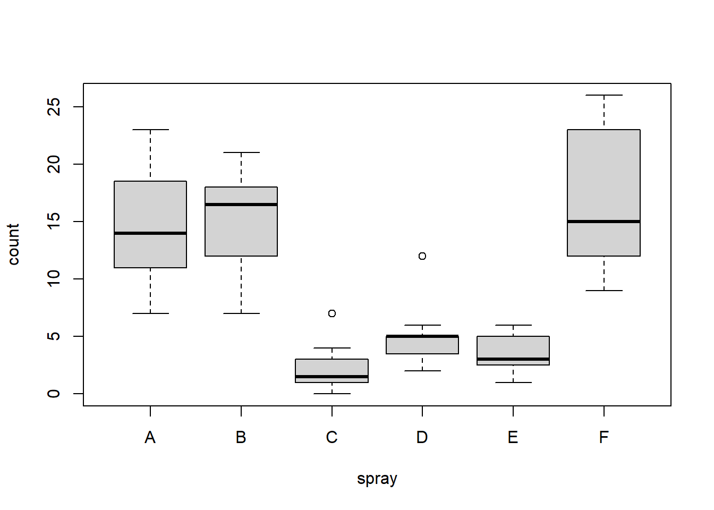

Capítulo 5 Produção gráfica
R é capaz de produzir uma grande variedade de gráficos em alta qualidade para publicação e impressão. Tipos básicos de gráficos ( barplot, boxplot, scatterplot, maps e etc). É bastante simples produzir gráficos tradicionais no R, especialmente no nível mais básico e cada gráfico pode ser personalizado para atender as demandas do usuário.

Gráficos R
Fonte: Revolutions
Os comando gráficos podem ser divididos em 3 categorias Mello and Peternelli (2013);
1. comando de alto nível – criam gráficos completos;
2. comando de baixo nível – adicionam informações a gráficos já existentes;
3. comando interativos – permitem ao usuário a interação com a janela gráfica.
Os gráficos são plotados na aba Plots.
Painel de plotagem
O R possui algumas funções nativas para a criação de figuras, tal como plot e hist.
De acordo com Perlin (2018) essas e outras funções nativas são restritivas e não recomendadas com customização pouco intuitivas com resultado final pouco atrativo.
Eu pessoalmente nunca experimentei tal limitação e, arrisco a dizer respeitosamente que, tudo que você quer fazer com funções do ggplot2 pode ser feito com funções nativas, basta saber manipular corretamente os argumentos. Mas tenho que concordar que com ggplot2 as funções são mais simples e objetivas. De qualquer forma fica o alerta para possíveis limitações.
5.1 Utilizando funções nativas
As funções nativas do R para prdoução de gráficos e plotagem são armazenadas pelos pacotes graphics e grDevices que carregam atutomaticamente sempre que o R é iniciado Peng (2020).
graphics: Contém as funções básicas do ambiente gráfico (plot, hist, boxplot e etc)
grDevices: É responsável por permitir a comunição dos gráficos produzidos com outras linguagens de tratameneto de imagens ( X11, .pdf, PostScript, PNG e etc).
Os gráficos básicos no R possuem uma grande variedade de parâmetros que nos auxiliam na produção e/ou “melhoramento” de um gráfico pré-concebido através da adição de novas informações.
5.1.1 boxplot - boxplot()
São gráficos muito úteis que conseguem concatenar e mostrar uma série de informações de uma só vez. Muito úteis principalmente quando temos uma variável categórica associada.
No R estes gráficos podem ser feitos utilizando o comando boxplot(). A fórmula tem a forma de eixo-y ~ eixo-x.
Vamos utilizar o pacote datasets e os dados InsectSprays que mostra dados de um experimento de agricultura onde insetos foram tratados com diferentes inseticidas.
A hipótese é que quanto mais eficiente o inseticida ( spray ) menos insetos ( count ) sobrevivem, ou seja, count é em função de spray.
No boxplot cada caixa mostra os dados observados de cada tipos de spray (A até F) e vemos que os inseticidas C, D e E são os mais eficientes.
Temos a mediana representada pela linha preta, os limites inferior e superior que representam o primeiro e o terceiro quartil (50% dos dados). As linhas superiores e inferiores correspondem a 2 desvios-padrão e os pontos fora das caixas são os outliers.
Para mais detalhes sobre interpretação do boxplot procure um livro de estatística ou acesse a internet como em .
data(InsectSprays)
str(InsectSprays)## 'data.frame': 72 obs. of 2 variables:
## $ count: num 10 7 20 14 14 12 10 23 17 20 ...
## $ spray: Factor w/ 6 levels "A","B","C","D",..: 1 1 1 1 1 1 1 1 1 1 ...head(InsectSprays)## count spray
## 1 10 A
## 2 7 A
## 3 20 A
## 4 14 A
## 5 14 A
## 6 12 Atail(InsectSprays)## count spray
## 67 13 F
## 68 10 F
## 69 26 F
## 70 26 F
## 71 24 F
## 72 13 Fboxplot(count ~ spray,data = InsectSprays)
Experimente adicionar o argumento notch=T.
5.1.2 histograma - hist()
Histograma é um tipo de gráfico que combina várias barras verticais representando as frequências das variáveis.
hist(InsectSprays$count,right=T, breaks=10, include.lowest=T,
col= "orange", border="red", adj=0, col.axis="blue")Veja que no histograma gerado nós adicionais alguns argumentos. Estes comandos introduzem variações no gráfico gerado que auxiliam na visualização das informações.
right=T: Considera valores fechado à direita (já é o padrão).
breaks=30: Define o intervalo das classes no eixo x (abscissas) controlando a espessura das barras.
include.lowest=T: Inclui os valor extremos do vetor.
col="orange: Define a cor do preenchimento da forma.
border=red: Define a cor da borda.
adj=0: Ajusta o alinhamento dos nomes dos eixos.
col.axis=blue: Define a cor dos eixos.
5.1.3 Gráfico de barras - barplot()
Linhas verticais descrevendo valores (barplot()).
Exemplo abaixo veio do stackoverflow Texture in barplot for 7 bars in R?. Aqui temos gráficos de barras com texturas.
# data generation ---------------------------------------------------------
set.seed(1)
mat <- matrix(runif(4*7, min=0, max=10), 7, 4)
rownames(mat) <- 1:7
colnames(mat) <- LETTERS[1:4]
# plotting settings -------------------------------------------------------
ylim <- range(mat)*c(1,1.5)
angle1 <- rep(c(45,45,135), length.out=7)
angle2 <- rep(c(45,135,135), length.out=7)
density1 <- seq(5,35,length.out=7)
density2 <- seq(5,35,length.out=7)
col <- 1 # rainbow(7)
# plot --------------------------------------------------------------------
op <- par(mar=c(3,3,1,1))
barplot(mat, beside=TRUE, ylim=ylim, col=col, angle=angle1,
density=density1)
barplot(mat, add=TRUE, beside=TRUE, ylim=ylim, col=col,
angle=angle2, density=density2)
legend("top", legend=1:7, ncol=7, fill=TRUE, col=col,
angle=angle1, density=density1)
par(bg="transparent")
legend("top", legend=1:7, ncol=7, fill=TRUE, col=col,
angle=angle2, density=density2) par(op)5.1.4 Gráfico de setores (pizza) - pie()
Divide um círculo em setores de acorco com os valores de cada categoria.
pie(1:15, col = rainbow(15)) 
col=rainbow(15)= Preenche as áreas internas do gráfico com 15 cores utilizando a paleta de cores do arco-íris.
5.1.5 Função plot()
A função plot() é uma função genérica amplamente utilizada para gerar gráficos. Nós vamos utilizá-la muito de agora em diante.
plot()é provavelmente o comando de alto nível mais simples para criação de gráficos. Com ele podemos visualizar desde gráficos de dispersão até imagens de satélites.
O tipo de plot a ser gerado depende da classe (class(x)) do primeiro argumento(x).
Se x e y são vetores (
plot(x, y)) produzirá um gráfico de dispersão ( scatter plot).Se x é um vetor numérico
plot(x)produzirá um gráfico dos valores de X contra os valores dos índices.Se x é uma série temporal
plot(x)produzirá um gráfico de uma série temporal.Se x é um factor,
plot(x)produzirá um bar plot de x.Se x é um factor e y um vetor numérico
plot(x,y)produzirá um bosplot de y para cada nível de x.Se x é um data.frame, y é qualquer objeto e expr é uma lista de nomes de objetos separados por “+” (por exemplo, a + b + c).
plot(df)eplot(~ expr)produzirão gráficos de distribuição das variáveis em uma tabela quadro de dados (1º plot) ou de vários objetos nomeados (2° plot).plot(y ~ expr)produzirá um plot de y em relação a cada objeto nomeado em expr.
v<-1:20
m<-v^2
plot(v,m)
points(rev(v),m) # points () adiciona pontos a um gráfico já existente
lines(v,400-m, col="red") #lines() adiciona linhas a um gráfico já existente
text(10,200, "Anuncie aqui")
X<-c(2, 3, 4, 5, 6, 7) #X maiúsculos mesmo
Y<-c(15, 46, 56, 15, 81, 11) #Y maiúsculo mesmo
Nomes<-LETTERS[1:6]
Cidades<-data.frame(X, Y, row.names=Nomes)
Cidades## X Y
## A 2 15
## B 3 46
## C 4 56
## D 5 15
## E 6 81
## F 7 11plot(Cidades)
identify(Cidades)
## integer(0)5.1.6 Formatando eixos
Os exemplos anteriores serviram apenas para ilustração, mas se quisermos algo para publicação ou qualquer comunicação de melhor qualidade temos que trabalhar um pouco mais.
Inicialmente podemos inserir os título e nomear os eixos.
main=: Insere um título no gráfico;
xlab=: Adiciona título ao eixo x do gráfico;
ylab=: Adiciona título ao eixo y do gráfico.
plot(trees$Girth, trees$Height,main="Relação Altura x Circunferência", xlab="Circunferência da árvore (polegadas)",
ylab="Altura da árvore (pés)")Nesse caso nós manipulamos os tamanhos dos eixos x e y concatenando vetores para xlim e ylim respectivamente.
xlim=: Determina o intervalo do eixo x.
ylim=: Determina o intervalo do eixo y.
plot(trees$Girth, trees$Height,main="Relação Altura x Circunferência", xlab="Circunferência da árvore (polegadas)",
ylab="Altura da árvore (pés)", xlim=c(5,25), ylim=c(60,90))
Os rótulos dos eixos são geralmente posicionados na horizontal, no entanto os rótulos podem ser ajustados para o critério do usuário utilizando o argumento las=x (x=valor inteiro entre 0 e 3).
* 1: sempre paralelo ao eixo (default)
* 2: sempre horizontal
* 3: sempre perpendicular ao eixo
* 4: sempre vertical
Podemos também plotar vários gráficos na mesma janela. Para isso precismamos controlar o painel com o comando par() combinado com mfrowou mfcol.
mfrow=(x,y): Distribui os gráficos em linhas em que x é o número de linhas e y o número de colunas.
mfcol=(x,y): Distribui os gráficos em colunas em que x é o número de linhas e y o número de colunas.
par(mfrow=c(2,2))
plot(trees$Girth, trees$Height,main="1° Relação Altura x Circunferência", xlab="Circunferência da árvore (polegadas)",
ylab="Altura da árvore (pés)", xlim=c(5,25),
ylim=c(60,90),col="red",las=0)
plot(trees$Girth, trees$Height,main="2° Relação Altura x Circunferência", xlab="Circunferência da árvore (polegadas)",
ylab="Altura da árvore (pés)", xlim=c(5,25),
ylim=c(60,90),col="blue",las=1)
plot(trees$Girth, trees$Height,main="3° Relação Altura x Circunferência", xlab="Circunferência da árvore (polegadas)",
ylab="Altura da árvore (pés)", xlim=c(5,25),
ylim=c(60,90),col="black",las=2)
plot(trees$Girth, trees$Height,main="4° Relação Altura x Circunferência", xlab="Circunferência da árvore (polegadas)",
ylab="Altura da árvore (pés)", xlim=c(5,25),
ylim=c(60,90),col="purple",las=3)
par(mfcol=c(2,2))
plot(trees$Girth, trees$Height,main="1° Relação Altura x Circunferência", xlab="Circunferência da árvore (polegadas)",
ylab="Altura da árvore (pés)", xlim=c(5,25),
ylim=c(60,90),col="red",las=0)
plot(trees$Girth, trees$Height,main="2° Relação Altura x Circunferência", xlab="Circunferência da árvore (polegadas)",
ylab="Altura da árvore (pés)", xlim=c(5,25),
ylim=c(60,90),col="blue",las=1)
plot(trees$Girth, trees$Height,main="3° Relação Altura x Circunferência", xlab="Circunferência da árvore (polegadas)",
ylab="Altura da árvore (pés)", xlim=c(5,25),
ylim=c(60,90),col="black",las=2)
plot(trees$Girth, trees$Height,main="4° Relação Altura x Circunferência", xlab="Circunferência da árvore (polegadas)",
ylab="Altura da árvore (pés)", xlim=c(5,25),
ylim=c(60,90),col="purple",las=3)Podemos alterar também os símbolos dos gráficos
Por padrão o R usa círculos abertos nos gráficos. Isso pode ser alterado de acordo com preferência do usuário usando o argumento pch = x (x=valor inteiro entre 0 e 25) dentro do plot().

par(mfcol=c(2,2))
plot(trees$Girth, trees$Height,main="1° Relação Altura x Circunferência", xlab="Circunferência da árvore (polegadas)",
ylab="Altura da árvore (pés)", xlim=c(5,25),
ylim=c(60,90),col="red",las=0, pch=2)
plot(trees$Girth, trees$Height,main="2° Relação Altura x Circunferência", xlab="Circunferência da árvore (polegadas)",
ylab="Altura da árvore (pés)", xlim=c(5,25),
ylim=c(60,90),col="blue",las=1,pch=4)
plot(trees$Girth, trees$Height,main="3° Relação Altura x Circunferência", xlab="Circunferência da árvore (polegadas)",
ylab="Altura da árvore (pés)", xlim=c(5,25),
ylim=c(60,90),col="black",las=2,pch=8)
plot(trees$Girth, trees$Height,main="4° Relação Altura x Circunferência", xlab="Circunferência da árvore (polegadas)",
ylab="Altura da árvore (pés)", xlim=c(5,25),
ylim=c(60,90),col="purple",las=3,pch=16)
O tamanho dos símbolos também pode ser ajustado utilizando o argumento cex=x.
par(mfcol=c(2,2))
plot(trees$Girth, trees$Height,main="1° Relação Altura x Circunferência", xlab="Circunferência da árvore (polegadas)",
ylab="Altura da árvore (pés)", xlim=c(5,25),
ylim=c(60,90),col="red",las=0, pch=2, cex=0.3)
plot(trees$Girth, trees$Height,main="2° Relação Altura x Circunferência", xlab="Circunferência da árvore (polegadas)",
ylab="Altura da árvore (pés)", xlim=c(5,25),
ylim=c(60,90),col="blue",las=1,pch=4, cex=0.8)
plot(trees$Girth, trees$Height,main="3° Relação Altura x Circunferência", xlab="Circunferência da árvore (polegadas)",
ylab="Altura da árvore (pés)", xlim=c(5,25),
ylim=c(60,90),col="black",las=2,pch=8, cex=1.3)
plot(trees$Girth, trees$Height,main="4° Relação Altura x Circunferência", xlab="Circunferência da árvore (polegadas)",
ylab="Altura da árvore (pés)", xlim=c(5,25),
ylim=c(60,90),col="purple",las=3,pch=16, cex=1.8)
O usuário não precisa unicamente utilizar os símbolos de pch para fazer seus gráficos, a conexão entres os pontos podem ser importante em alguns casos acrescentando o argumento type="x" (x pode ser p, l, b, c, o, h, s, S, n).
- “p” para pontos;
- “l” para linhas;
- “b” para ambos;
- “c” apenas as linhas sem os pontos;
- “o” para ambos sobrepostos;
- “h” para tipo histograma (ou “alta densidade”) linhas verticais;
- “s” para degraus;
- “S” para outros tipos de degraus;
- “n” sem plot;
par(mfcol=c(3,3))
plot(trees$Girth, trees$Height,main="1° Relação Altura x Circunferência", xlab="Circunferência da árvore (polegadas)",
ylab="Altura da árvore (pés)", xlim=c(5,25),
ylim=c(60,90),col="red",las=0, cex=1, type="p")
plot(trees$Girth, trees$Height,main="2° Relação Altura x Circunferência", xlab="Circunferência da árvore (polegadas)",
ylab="Altura da árvore (pés)", xlim=c(5,25),
ylim=c(60,90),col="blue",las=1,cex=1, type="l")
plot(trees$Girth, trees$Height,main="3° Relação Altura x Circunferência", xlab="Circunferência da árvore (polegadas)",
ylab="Altura da árvore (pés)", xlim=c(5,25),
ylim=c(60,90),col="black",las=2, cex=1,type="b")
plot(trees$Girth, trees$Height,main="4° Relação Altura x Circunferência", xlab="Circunferência da árvore (polegadas)",
ylab="Altura da árvore (pés)", xlim=c(5,25),
ylim=c(60,90),col="purple",las=3,cex=1,type="c")
plot(trees$Girth, trees$Height,main="5° Relação Altura x Circunferência", xlab="Circunferência da árvore (polegadas)",
ylab="Altura da árvore (pés)", xlim=c(5,25),
ylim=c(60,90),col="red",las=0, cex=1, type="o")
plot(trees$Girth, trees$Height,main="6° Relação Altura x Circunferência", xlab="Circunferência da árvore (polegadas)",
ylab="Altura da árvore (pés)", xlim=c(5,25),
ylim=c(60,90),col="blue",las=1,cex=1, type="h")
plot(trees$Girth, trees$Height,main="7° Relação Altura x Circunferência", xlab="Circunferência da árvore (polegadas)",
ylab="Altura da árvore (pés)", xlim=c(5,25),
ylim=c(60,90),col="black",las=2, cex=1,type="s")
plot(trees$Girth, trees$Height,main="8° Relação Altura x Circunferência", xlab="Circunferência da árvore (polegadas)",
ylab="Altura da árvore (pés)", xlim=c(5,25),
ylim=c(60,90),col="purple",las=3,cex=1,type="S")
plot(trees$Girth, trees$Height,main="9° Relação Altura x Circunferência", xlab="Circunferência da árvore (polegadas)",
ylab="Altura da árvore (pés)", xlim=c(5,25),
ylim=c(60,90),col="purple",las=3,cex=1,type="n")
Os gráficos podem também ser feitos por diferentes tipos de linhas. Uma vez defino que ele será do tipo l por xemplo (type="l") podemos variar como a linha será apresentada com lty=x (x = número de 0 a 6).
Experimente acrescentar o comando lwd=x (x é um número) para ir variando a espessura da linha.

Fonte: sthda
par(mfcol=c(3,2))
# Já que lty = 0 produz uma gráfico em branco não vamos mostrá-lo.
for(i in 1:6){
plot(trees$Girth, trees$Height,main=paste(i,"Relação Altura x Circunferência"), xlab="Circunferência da árvore (polegadas)",
ylab="Altura da árvore (pés)", xlim=c(5,25),
ylim=c(60,90),col="red",las=0, cex=1, type="l",lty=i)
legend("bottomright",c(paste("lty=",i)),col=c("red"))
}Podemos também fazer a sobreposição de gráficos ou adicionar elementos em um gráfico existente.
par(new=T): habilita a sobreposição no mesmo painel de um outro gráfico.
Lembre-se de desativar os outros parâmetros como eixos, labels, nomes e etc. Deixe apenas os pontos e informações do eixo necessário.
axes=FALSE: Desativa a inclusão dos eixos
xlab="" e ylab="": Deixa os labels dos eixos vazios.
plot(trees$Girth, trees$Height,main="Relação Altura x Circunferência x Volume", xlab="Circunferência da árvore (polegadas)",ylab="Altura da árvore (pés)",xlim=c(5,25),
ylim=c(60,90), las=1, pch=16, col="springgreen")
par(new=TRUE)
plot(trees$Girth, trees$Volume, axes=FALSE, xlab="", ylab="",
pch=4, col="blue")Veja no gráfico acima que o eixo secundário da informação voluma não foi incluído por isso precisamos adicioná-lo. Contudo antes de adicioná-lo, vamos ter que ajustar o painel, caso contrário ele será plotado, mas não aparecerá.
Precisamos entender antes de tudo que a região de plotagem é possui 4 lados (4 margens) numeradas da seguinte forma.
- 1 - inferior
- 2 - esquerda
- 3 - superior
- 4 - direita

Margens da figura
O tamanho destas margens podem ser controladas utilizando o argumento mar=c(A,B,C,D) em que c(A, B, C e D) é um vetor numérico que determina o tamanho das margens referentes à 1ª, 2ª, 3ª e 4ª posição, respectivamente.
Vamos liberar um espaço à direita para adicionar um eixo secundário no exemplo anterior.
O eixo secundário é inserido “ativando” a margem 4 com comando axis(side=4, las=1) e em seguinda, acrescentando as informaçõpes necessárias com mtext(side=4, line=2.5, "Volume da madeira (pés cúbicos)").
side=4: Indica que as informações serão inseridas no lado 4.
line=2.5: Indica a posição onde o texto será inserio no lado 4.
par(mar=c(4, 4, 2, 4))
plot(trees$Girth, trees$Height,main="Relação Altura x Circunferência x Volume", xlab="Circunferência da árvore (polegadas)",
ylab="Altura da árvore (pés)",xlim=c(5,25),
ylim=c(60,90), las=1, pch=16, col="springgreen")
par(new=TRUE)
plot(trees$Girth, trees$Volume, axes=FALSE, xlab="", ylab="",
pch=4, col="blue")
axis(side=4, las=1)
mtext(side=4, line=2.5, "Volume da madeira (pés cúbicos)")
Podemos adicionar informações fora do gráfico (como título do eixo secundário) de uma outra forma.
Para isto precisamos determinar xpd=T que viabiliza utilizar as margens externas do gráfico atual (padrão é xpd=F).
Caso determine xpd=NA você pode utilizar qualquer região da área de plotagem.
par(oma=c(0,0,4,3)): oma (Outer Margin Area) - especifica que as margens 3 e 4 terão 4 e 3 linhas, respectivamente.
Investigue também os argumentos omi, mai, mgp, outer e omd.
par(mar=c(4, 4, 2, 4),par(oma=c(0,0,4,3)))
plot(trees$Girth, trees$Height,main="Relação Altura x Circunferência x Volume", xlab="Circunferência da árvore (polegadas)",
ylab="Altura da árvore (pés)",xlim=c(5,25),
ylim=c(60,90), las=1, pch=16, col="springgreen")
par(new=TRUE)
plot(trees$Girth, trees$Volume, axes=FALSE, xlab="", ylab="", pch=4, col="blue")
axis(side=4, las=1)
#mtext(side=4, line=2.5, "Volume da madeira (pés cúbicos)")
text(22.6, 70, adj=0, srt=-90, " Volume da madeira (pés cúbicos)", xpd=TRUE)Pesquise por outer=T.
A legenda pode ser adicionada com argumento legend().
bty="n": não permite desenhar uma caixa em torno da legenda.
\n : Permite quebrar o texto como no título agora inserido com comando title().
cex.main=: Tamanho da fonte
font.main= Tipo da fonte
par(mfrow=c(1,2),mar=c(2, 2, 2, 2),par(oma=c(1,1,1,1)))
plot(trees$Girth, trees$Height, xlab="Circunferência da árvore (polegadas)",
ylab="Altura da árvore (pés)",xlim=c(5,25),
ylim=c(60,90), las=1, pch=16, col="springgreen")
title("Medidas de altura, diâmentro e\n volume para 31 cerejeiras", cex.main=0.5,font.main=2)
par(new=TRUE)
plot(trees$Girth, trees$Volume, axes=FALSE, xlab="", ylab="",
pch=4, col="blue")
axis(side=4, las=1)
#mtext(side=4, line=2.5, "Volume da madeira (pés cúbicos)")
text(25, 70, adj=0, srt=-90, " Volume da madeira (pés cúbicos)",
xpd=TRUE)
legend("topleft", c("Altura da árvore", "Volume da madeira"),
pch=c(16, 4),col=c("springgreen", "blue"), bty="n")
#####################
plot(trees$Girth, trees$Height,xlab="Circunferência da árvore (polegadas)",
ylab="Altura da árvore (pés)",xlim=c(5,25),
ylim=c(60,90), las=1, pch=16, col="springgreen")
title("Medidas de altura, diâmentro e\n volume para 31 cerejeiras", cex.main=1,font.main=4)
par(new=TRUE)
plot(trees$Girth, trees$Volume, axes=FALSE, xlab="", ylab="",
pch=4, col="blue")
axis(side=4, las=1)
#mtext(side=4, line=2.5, "Volume da madeira (pés cúbicos)")
text(25, 70, adj=0, srt=-90, " Volume da madeira (pés cúbicos)",
xpd=TRUE)
legend(12,20, c("Altura da árvore", "Volume da madeira"),
pch=c(16, 4), col=c("springgreen", "blue"), bty="n")
Outra maneira de plotar vários gráficos é manipulando os layouts.
layout.matrix <- matrix(c(2,1, 0, 3), nrow = 2, ncol = 2)
layout(mat = layout.matrix,
heights = c(1, 2), # Altura das duas linhas
widths = c(2, 2)) # Largura das duas colunas
layout.show(3)layout.matrix <- matrix(c(2,1, 0, 3), nrow = 2, ncol = 2)
layout(mat = layout.matrix,
heights = c(1, 2), # Altura das duas linhas
widths = c(2, 2)) # Largura das duas colunas
plot(trees$Girth, trees$Height, xlab="Circunferência da árvore (polegadas)",ylab="Altura da árvore (pés)",xlim=c(5,25),
ylim=c(60,90), las=1, pch=16, col="springgreen")
title("Medidas de altura, diâmentro e\n volume para 31 cerejeiras", cex.main=1,font.main=2)
par(new=TRUE)
plot(trees$Girth, trees$Volume, axes=FALSE, xlab="", ylab="",
pch=4, col="blue")
axis(side=4, las=1)
#mtext(side=4, line=2.5, "Volume da madeira (pés cúbicos)")
text(25, 70, adj=0, srt=-90, " Volume da madeira (pés cúbicos)",
xpd=TRUE)
legend("topleft", c("Altura da árvore", "Volume da madeira"),
pch=c(16, 4),col=c("springgreen", "blue"), bty="n")
par(mar = c(0, 4, 4, 0))
boxplot(trees$Girth, xaxt = "n",yaxt = "n",
bty = "n",col = "white", frame = FALSE, horizontal = TRUE, main="Boxplot circunferência")
par(mar = c(5, 0, 4, 0))
boxplot(trees$Height,xaxt = "n",yaxt = "n",
bty = "n",col = "white", frame = F,main="Boxplot Altura")Para salvar os gráficos ou figuras podemos fazê-lo manualmente no painel Plots -> export e escolher o formato de saída bem como as dimensões.
Podemos também exportar as figuras por linhas de comando.
png(filename = "ENG792.Plot.png", width = 480, height = 480)
layout.matrix <- matrix(c(2,1, 0, 3), nrow = 2, ncol = 2)
layout(mat = layout.matrix,
heights = c(1, 2), # Altura das duas linhas
widths = c(2, 2)) # Largura das duas colunas
plot(trees$Girth, trees$Height, xlab="Circunferência da árvore (polegadas)",ylab="Altura da árvore (pés)",xlim=c(5,25),
ylim=c(60,90), las=1, pch=16, col="springgreen")
title("Medidas de altura, diâmentro e\n volume para 31 cerejeiras", cex.main=1,font.main=2)
par(new=TRUE)
plot(trees$Girth, trees$Volume, axes=FALSE, xlab="", ylab="",
pch=4, col="blue")
axis(side=4, las=1)
#mtext(side=4, line=2.5, "Volume da madeira (pés cúbicos)")
text(25, 70, adj=0, srt=-90, " Volume da madeira (pés cúbicos)",
xpd=TRUE)
legend("topleft", c("Altura da árvore", "Volume da madeira"),
pch=c(16,4),col=c("springgreen", "blue"), bty="n")
par(mar = c(0, 4, 4, 0))
boxplot(trees$Girth, xaxt = "n",yaxt = "n",
bty = "n",col = "white", frame = FALSE,
horizontal = TRUE,main="Boxplot circunferência")
par(mar = c(5, 0, 4, 0))
boxplot(trees$Height,xaxt = "n",yaxt = "n",
bty = "n",col = "white", frame = F,main="Boxplot Altura")
dev.off()## png
## 2Para mais exemplos sobre as fontes acesse. aqui
Para saber mais dos parâmetros:
names(par())## [1] "xlog" "ylog" "adj" "ann" "ask"
## [6] "bg" "bty" "cex" "cex.axis" "cex.lab"
## [11] "cex.main" "cex.sub" "cin" "col" "col.axis"
## [16] "col.lab" "col.main" "col.sub" "cra" "crt"
## [21] "csi" "cxy" "din" "err" "family"
## [26] "fg" "fig" "fin" "font" "font.axis"
## [31] "font.lab" "font.main" "font.sub" "lab" "las"
## [36] "lend" "lheight" "ljoin" "lmitre" "lty"
## [41] "lwd" "mai" "mar" "mex" "mfcol"
## [46] "mfg" "mfrow" "mgp" "mkh" "new"
## [51] "oma" "omd" "omi" "page" "pch"
## [56] "pin" "plt" "ps" "pty" "smo"
## [61] "srt" "tck" "tcl" "usr" "xaxp"
## [66] "xaxs" "xaxt" "xpd" "yaxp" "yaxs"
## [71] "yaxt" "ylbias"5.2 Cores no R
O R nativo possui uma grande variedade de cores que podem ser utilizadas e combinadas.

Podemos utilizar cores (cm.colors, rainbow, heat.colors, terrain.colors ou topo.colors) do grDevices.

Podemos utilizar pacotes de cores também como RColorBrewer, unikn, viridis
5.2.1 RColorBrewer

5.2.2 unkin

5.2.3 viridis
5.3 Para mais informações utilize o Google ou os documentos abaixo
Uma grande fonte de inspiração para produção de gráficos é o The R Graph Gallery.
Mastering r plot - part 2
Mastering r plot - part 3
An Introduction to R Graphics parameters list
The R Graphics Package
Graphical Parameters - cheat sheet
Graphical parameters - STHDA
Styling Base R Graphics
R Base Graphics: An Idiot’s Guide
R Function of the Day - par(mar, mgp, las)
Set or Query Graphical Parameters
Graphical Layouts
An xpd-tion into R plot margins
AN INTRODUCTION TO PATTERNPLOT PACKAGE
Top R Color Palettes to Know for Great Data Visualization
Leia também Murrel (2011), Venables and Smith (2020), Chang (2020) e Neth (2021)